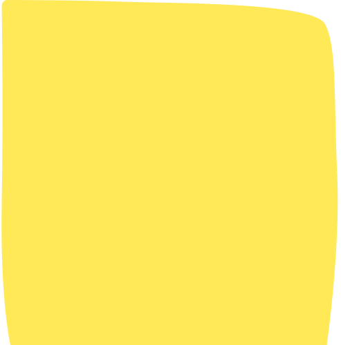
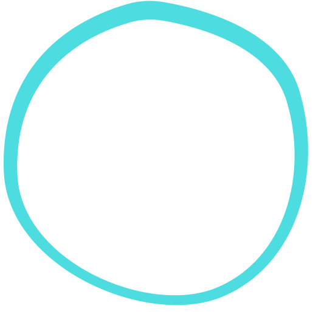
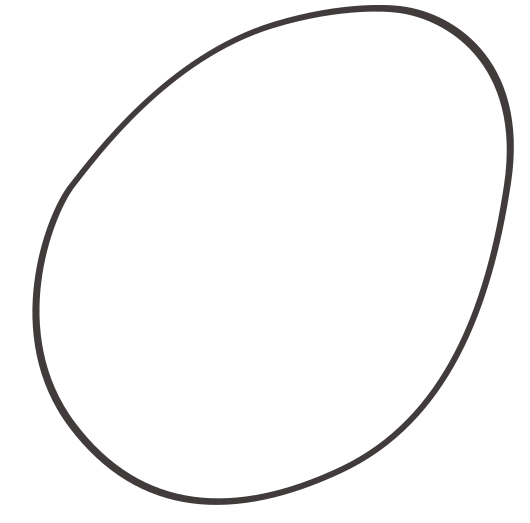
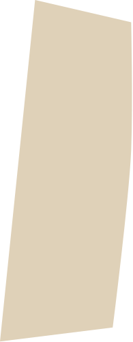
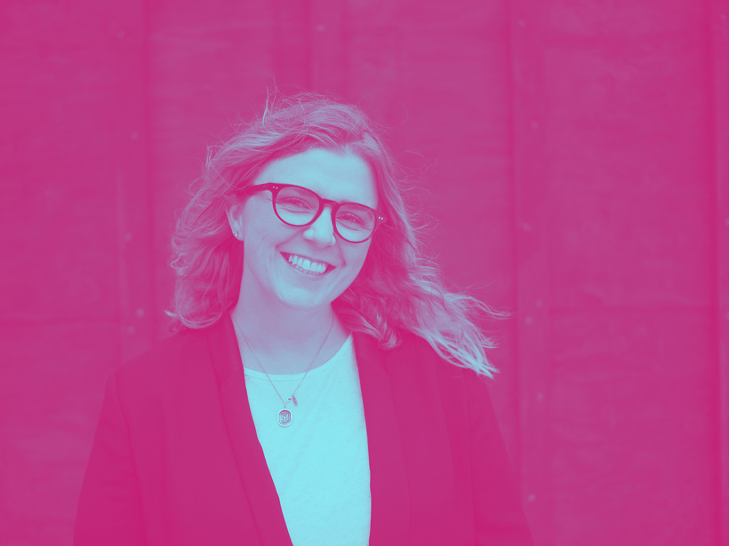
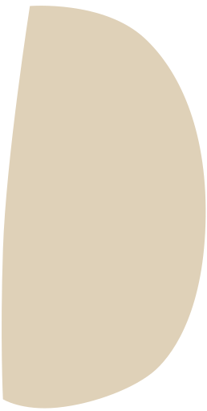
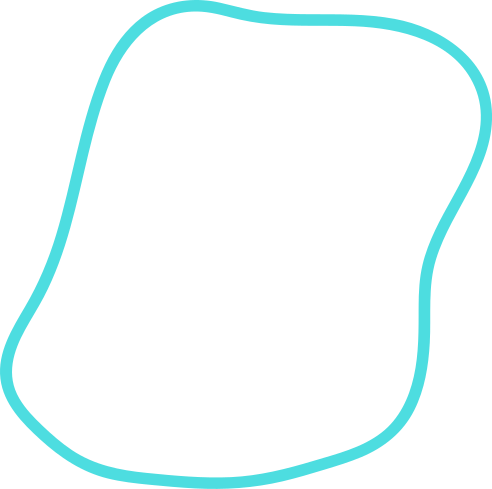

a guide to looking & feeling like
frankly
human.
A design-led practice with two rooms. Editorial confidence for client-facing work; warm, hand-made for personal coaching. One wordmark. One painted palette. One voice — yours.
The system on one page
Six things that hold it together.
Every Frankly Human surface — workshop deck, workbook, LinkedIn carousel, IG tile — pulls from the same six moves. Use them. Don't add more.
01
The DM Serif lockup
Lowercase serif headlines do the heavy lifting. Italic word for the moment of truth.
02
One painted shape
One blob — teal, pink, yellow, or plum — never a stack of them.
03
A signature flourish
An Allura script line for section openers and "the human bit". Used sparingly, like a signature.
04
Hand-drawn icons
Thick black brush-pen sketches. Wonky on purpose. Never vector-outline icon sets.
05
Duotone portraits
Photos of people in pink + teal duotone. Warmth and rigour in one image.
06
Plenty of paper
Warm off-white space around everything. Breath, not brand fill.
01 · Mood board
The feeling, in a dozen tiles.
Before any single rule — this is the room. Warm paper, painted shapes, hand-drawn icons, a signature flourish, and one big italic word that lands.
signature flourish
design yo' life
pull-quote
“
Nothing changes,
if nothing changes.
painted · teal outline
painted · sand fill

painted · yellow fill
sketch · meditate
sketch · head & idea
sketch · path to stars

duotone · pink + teal
the four accents
big honest number
6 weeks
the question
What am I doing
when I'm at my best?
02 · Two registers
One practice. Two rooms.
Frankly Human runs two registers inside one studio: the warm Coaching brand for human work, and frankly@work for corporate training and learning design. Same wordmark, same icons, same voice. Different volume.
Register A · Coaching
Designer in the room.
Service blueprinting · D2M · workshops · LinkedIn · 1:1
Confident, editorial, warm. Painted shapes, hand-drawn icons, signature flourishes. The voice that gets a senior team to nod, then put pen to paper.
Register B · frankly@work
Corporate training, done frankly.
L&D · enterprise workshops · learning design · facilitator decks
Editorial, structured, confident. Ink and paper anchor everything; lime is the single pop. Sketch elements appear sparingly — the room speaks first, the personality lands second.
03 · Wordmark
The frankly human wordmark.
A lowercase serif lockup. The letters do the work — never decorate them, never stretch them. Two stacks for primary use; an F·H monogram for tight spaces.
frankly
human.
Primary · two-line stack · ink on paper
frankly human.
One-line · use on teal · the workshop register
frankly human.
Reverse · paper on ink · for editorial moments
doUse lowercase always. The mark is set lowercase. Title-case feels corporate; we are not.
don'tDon't recolour the wordmark. Ink on light, paper on dark or colour. That's it.
doLeave a full x-height of clear space around every side. Crowding kills it.
don'tDon't stretch, condense or skew. The serif's proportions are the brand.
04 · Palette
Painted, not printed.
Four anchors — the room itself — and four painted accents: teal, hot pink, mango yellow, plum. One accent per surface, please.
One accent per surface. A single painted shape, a single italic word in colour, a single duotone portrait. Stacking them collapses the system.
Anchors
Always on. The room itself.
#100000
Body, wordmark, headlines, rules.
Ink
#423B3B
Soft body for long-form. Avoids harsh ink-on-paper for paragraphs.
Charcoal
#FBF7EE
Default page. Always warm — never pure white.
Paper
#E0D2B5
Sand fills, soft cards, table rows. The "back of the room" tone.
Sand
Painted accents
Pick one per surface. Never a stack.
#47ACA4
Calm confidence. Outline blobs, ribbons, headline accents.
Teal
#FF3990
The zing. Quote glyphs, italic words, pink-side of duotone.
Pink
#FFBD59
Warmth and energy. Card fills, anchor-word backings, highlights.
Yellow
#7A1F4A
The italic emphasis colour. Section openers, the deep accent.
Plum
05 · Type
Five voices. One stack.
A display serif for confidence. A book serif for paragraphs that breathe. Inter for chrome. A signature script for the human bit. A printed hand for asides on a curve.
Title · DM Serif Display
show up.
Title role. Lockups, slide titles, hero headlines, big italic words. Lowercase by default. Italic carries the meaning.
Subtitle / Quote · Fraunces
Research isn't a phase. It's a habit.
Subtitle & Quote roles. Ledes, pull-quotes, anything longer than a line. Variable: SOFT 50, opsz 144. Italic for emphasis.
Heading / Subheading / Body / Caption · Inter
Module 04 · Foundations · Updated today
Heading, Subheading, Body and Caption roles. The workhorse. Use weights 400/500/600 only. Body 16, captions 12.
Section header · Allura (signature script)
design yo' life
Section-header role. An elegant signature flourish. Used once per surface — like a real signature. Never set it small; never set it as body.
Aside · Patrick Hand
...have a think...
real talk time
Aside / hand-printed prompt. Curved-arc labels, eyebrows on workbook pages, prompts. Lowercase. Often on a curve.
Putting it together
a workshop onshow up.
A signature flourish above the title; one italic word in accent. No more, no less.
How the Canva roles map
TitleDM Serif Display · 92 / 0.95show up.
SubtitleFraunces · 32 / 1.3A practice that surfaces moments of truth.
HeadingInter Semibold · 22 / 1.3Module 04 · Foundations
SubheadingInter Medium · 16 / 1.4 · uppercaseWelcome & intentions
Section headerAllura · 64 / 0.9design yo' life
BodyInter Regular · 16 / 1.55Body copy that carries the thought without showing off.
QuoteFraunces Italic · 28 / 1.15"Nothing changes if nothing changes."
CaptionInter Regular · 12 / 1.4Updated · 02 May 2026 · v0.4
Hero / cover184 / 0.88Aa frankly
Slide title92 / 0.95Aa show up.
Section opener72 / 1Aa section.
Subtitle / lede32 / 1.35Aa a sentence that matters.
Body16 / 1.55Aa body copy that carries the thought without showing off.
Caption12 / 1.4Aa caption · interface · metadata.
Aside22 / 1have a think · real talk time
Section header64 / 0.9design yo' life
Slide minimum body size · 24 px · always
06 · Painted shapes
Wonky on purpose.
The accent shape isn't a rectangle, a button or a gradient — it's a hand-drawn blob. Two flavours: solid fills sit behind a word; outlined blobs hold a quote, a question, or a portrait.
Solid fills
Sand, yellow, pink and plum, drawn by hand and kept lumpy. Live behind anchor words and short titles. Never overlap two solid fills — they're not a brand pattern.
Outlined blobs
Charcoal, teal, pink, plum — a single stroke, hand-drawn. Hold a quote, a question, an icon or a duotone portrait. The stroke stays one weight; never add a drop-shadow.
Solid fills · the family
solid · sandfill

solid · sand halffillsolid · yellowfill
solid · pinkrecolour
Outlined blobs · the family
outline · tealcircle

outline · tealbloboutline · charcoalegg
outline · plumrecolour
07 · Components
A small kit, well-used.
Six components. Every Frankly Human surface is a remix of these — nothing more, nothing less.
Signature opener
The flourish above the title.
An Allura signature script line above a DM Serif title. Used for section openers and the warm-human moments. One per surface.
Anchor word on shape
One blob, one word.
The slide's anchor word sits in front of a single painted blob. No drop-shadow, no border. The blob is the punctuation.
Pull-quote
The big quotation glyph.
A pink DM Serif quote glyph, the quote in italic, attribution in Inter caps. Always italic; never set in regular.
“
Nothing changes,
if nothing changes.
In the room · week 2
Duotone portrait
Pink-and-teal photo.
People portraits get a duotone treatment — pink shadows, teal highlights — so they sit in the brand without stealing attention.
Hand-printed aside
The curved prompt.
A short Patrick Hand line on an arc above a question or title. The "wait, look at this" tap on the shoulder.
Sketch icon + ask
The illustrated prompt.
A hand-drawn icon and an italic question, side by side. Used for workbook prompts and reflective slides.
When did you last sit with the silence?
08 · Iconography
Hand-drawn. Brush pen.
Frankly Human icons are thick brush-pen sketches — closer to a Sharpie drawing than a vector outline. Wonky on purpose. One concept per icon. They earn their place — never decoration.
The library · 20 icons
8 from the existing brand · 12 new, drawn in the same hand
Sub-family
Method icons · 51 — the full IDEO Method Cards vocabulary, organised into Learn · Look · Ask · Try. Same brush hand as the main library; one icon per method, used on cards, blueprints, and workshop walls. Schematic placeholders shown — to be redrawn for final art.
Learn · 12
Analyse the information you've collected · find patterns and meaning
Competitive product survey
Cross-cultural comparisons
Look · 11
Observe people to discover what they do · not just what they say
Ask · 14
Engage people in your enquiry · let them share their experience
Try · 14
Make tangible representations of concepts · evaluate and refine
Predict next year's headlines
Quick-and-dirty prototyping
On colour · the icon stays black
doUse the existing library first. Need a new one? Brush-pen sketch, photographed or scanned, stays at one weight.
don'tDon't use vector outline-icon sets (Lucide, Feather, Heroicons, etc.). They read corporate; we don't.
doKeep the wonk. Slightly off-centre, slightly heavy in places. The hand is the point.
don'tDon't recolour the icon stroke. Icons stay black. The background carries the colour. (Inverted-on-plum is the only exception.)
09 · Layouts
Four working layouts.
Almost every Frankly Human slide is one of these four. Pick on purpose; mix once per deck, not once per slide.
A · the opener
a workshop on
show up.
C · editorial
Module 02 · Why we map
“
Service blueprinting
is thinking in lanes.
— in the room, week one
D · the prompt
Reflection · 5 min
When did you last change your mind?
10 · What we don't do
The no-list.
As clear as a yes-list. If you find yourself reaching for any of these, you've drifted.
don'tNo corporate gradients.
Brand-guideline gradients (purple→pink, teal→blue) read SaaS. Use a single painted blob instead.
don'tNo vector outline icons.
No Lucide, Feather, Heroicons. Brush-pen library only.
don'tNo drop-shadows.
Not on cards, not on icons, not on photos. The brand is flat and confident.
don'tNo emoji.
Sketch icons and signature flourishes do the warmth. Emoji do the opposite.
don'tNo pure white (#FFF).
Always warm paper (#FBF7EE). White feels clinical; we are not.
don'tNo stretching the wordmark.
The serif's proportions are the brand. Don't condense, don't outline, don't recolour.
don'tNo two accents on one surface.
Pick teal, pink, yellow, or plum. Pick one. Move on.
don'tNo filler stat icons.
Big honest numbers, alone. No little chart icon next to the 73%.
don'tNo body text under 24 px on slides.
Read it from the back of the room. If you can't, it's too small.